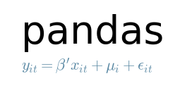
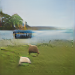
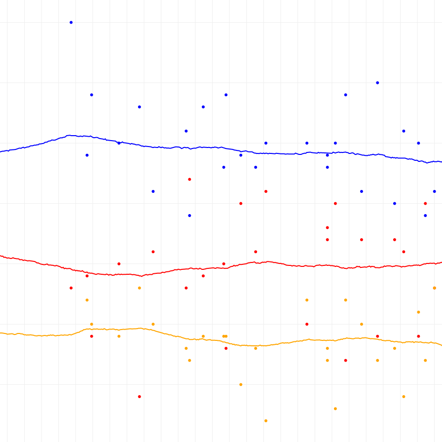
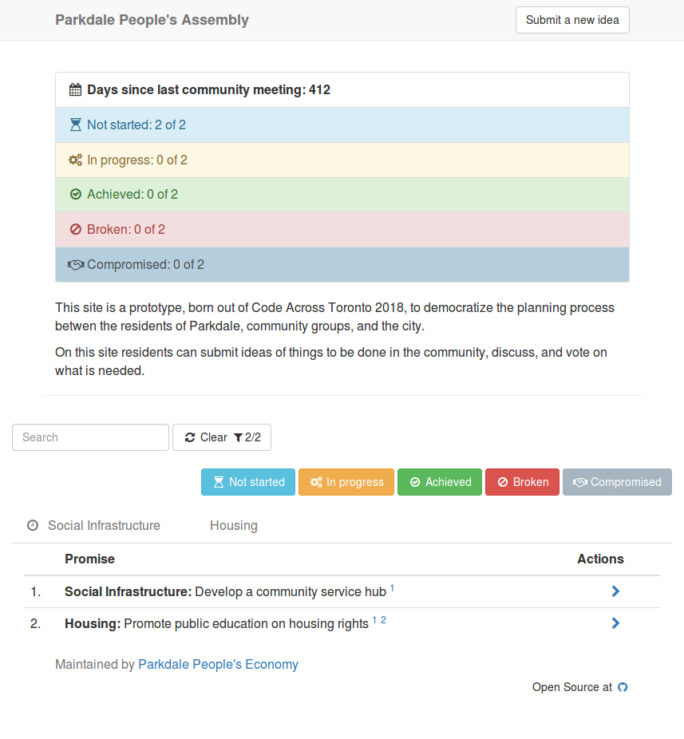
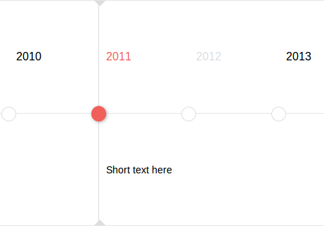
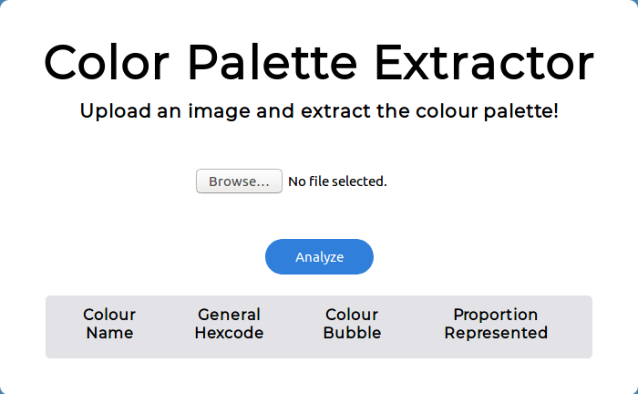
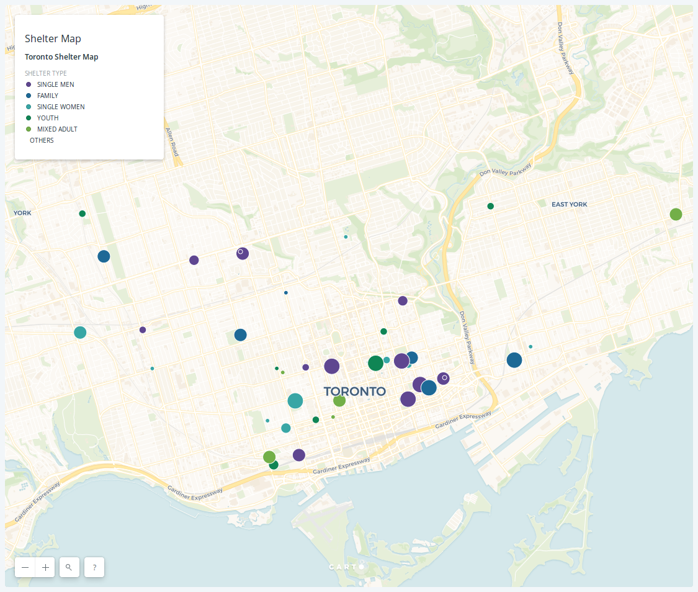
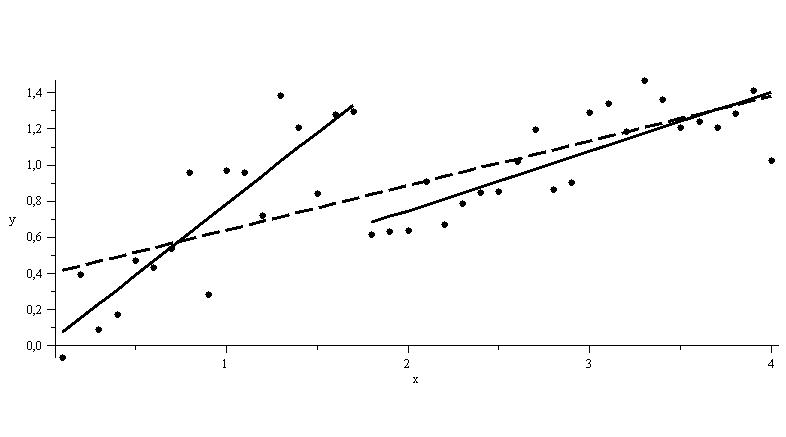
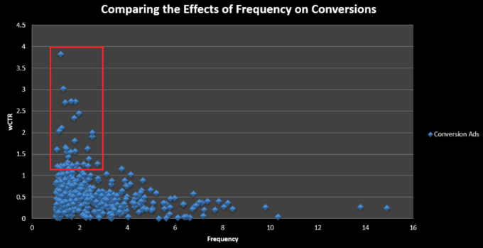

Bio
My name’s Josh. My experience is in data science, analytics, programming, public policy, and marketing. You can view my up-to-date resume here.
After a hiatus, I’m back at school finishing my degree at the University of Waterloo in Science and Business. Initially to work on the provincial election campaign as a data scientist, and then to help Destination Ontario build its analytic/strategic capacity.
My academic interests have been in the computational sciences (specifically neuroscience) and biological statistics.
Projects
My Github contributions over the last year:
And here are some of the things I am working on or have worked on recently. You can see more them more thoroughly on my Github.
| Description | Picture |
|---|---|
| Created a toy LSTM text generation model based on Canadian federal parliamentary debates. | |
| Helping the University of Waterloo Data Science Club build its first website which will host club information, their blog and a knowledge repository of everything data science. | |
| Made a tiny package that wraps around Pandas to encode continuous variables into binned binary features. |  |
| Developed git-status-size a custom git utility to track the file sizes of new repo changes and allow users to add files to their .gitignore. | |
| Assisting a small cognitive science research team at McGill University with studying human facial recognition to better understand Dual Process Theory. | |
| Currently building a web demo of Google’s sg2im neural network to build photorealistic images from scene graphs using React.js and Flask. |  |
| Constructed a pipeline for analyzing social media marketing performance based on image features using object-detection and colour extraction. (Closed Source) |  |
| Built a poll aggregation model for the Ontario provincial election using state-space modeling with PyStan and Plotly. (Closed Source) |  |
| As part of Code Across Toronto 2018 I was part of a small team that built an experiment in participatory democracy for Toronto�s Parkdale neighbourhood. |  |
| Contributer to Timeliny a jQuery plugin for building interactive web timelines. I mainly contributed navigation features to the library. |  |
| Created a Flask web app to allow users to extract colour palettes contained within photos. |  |
| Helped launch Chalmers Cards a guerrilla project bringing information resources to people who live in unstable housing conditions. | |
| Used open data from the city of Toronto to create an interactive map visualizing the city�s shelter locations and their capacity. |  |
| Technology development at Democracy Kit a non-profit providing educational resources and technology for candidates running for municipal office. | |
| Built the first Python module for computing Chow Break tests to measure structural breaks in time series data. |  |
| Using Mapbox.js and a (now-deprecated) Job Bank API, allowed users to visualize the locations of employment opportunities posted to the federal job board. | |
| Wrote a paper analyzing government marketing data to provide insights into how the Ontario Cabinet Office can better communicate public policy. |  |
| Co-founded BykMe a now defunct startup that aimed to bring peer-to-peer bike sharing to Kitchener-Waterloo. |